En steg-för-steg-guide för lärare. Vi följer ett konkret exempel där du skapar placering för klassen 9A med tolv elever.
Vad är Klassrumsplacering?
Klassrumsplacering hjälper dig som lärare att skapa nya sittplatser i klassrummet – snabbt, rättvist och med hänsyn till elevernas behov.
Du lägger in eleverna, anger vilka regler som gäller, ritar upp hur bänkarna står, och låter sedan programmet föreslå en placering.
Programmet fungerar i webbläsaren eller som installerad app på datorn. Gränssnittet är detsamma i båda fallen.
All data sparas på din egen dator – inget skickas till molnet och det finns ingen inloggning.
De fyra flikarna
Flik
Används till
Elever
Lägga till och hantera elever i klassen
Regler
Ange vem som ska eller inte ska sitta bredvid varandra
Placering
Möblera rummet, generera och justera sittplatser
Historik
Se och öppna tidigare sparade placeringar
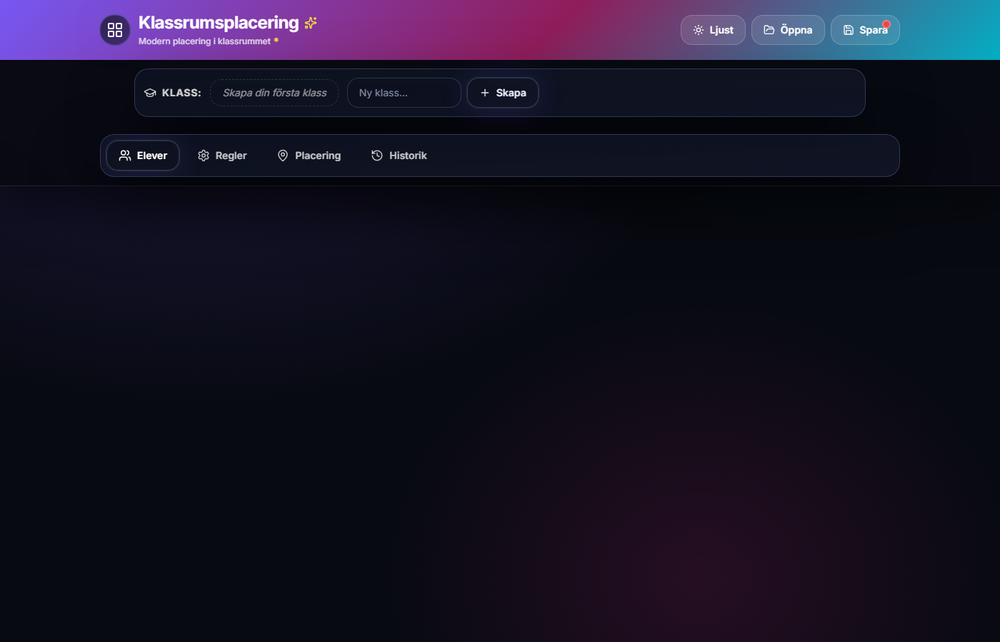
Startskärmen när du öppnar programmet första gången.
Steg 1 – Skapa klassen 9A
I vårt exempel ska vi arbeta med klassen 9A. Börja med att skapa den.
Öppna Klassrumsplacering i webbläsaren eller starta skrivbordsappen.
I klassväljaren (under rubriken) skriver du 9A i fältet Ny klass....
Klicka på knappen Skapa.
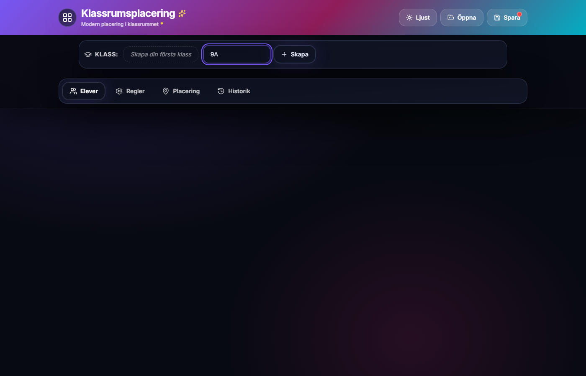
Skriv klassnamnet och klicka Skapa.
Klassen blir aktiv direkt. Fliken Elever visas och du kan börja lägga till elever.
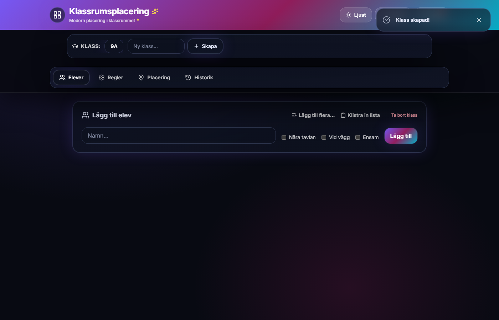
Klassen 9A är skapad – nu är det dags att lägga till elever.
Steg 2 – Lägg till elever
Det snabbaste sättet att lägga in en hel klass är att klistra in en namnlista. I exemplet använder vi tolv elever:
Anna Andersson
Bertil Berg
Cecilia Carlsson
David Dahl
Erika Ek
Fredrik Fransson
Greta Gran
Henrik Hansson
Ingrid Isaksson
Jonas Johansson
Klara Karlsson
Lukas Larsson
Se till att du är på fliken Elever.
Klicka på Klistra in lista uppe till höger.
Klistra in namnlistan i textrutan. Namn kan separeras med ny rad eller kommatecken.
Klicka Importera. Antalet elever visas på knappen, t.ex. "Importera (12)".
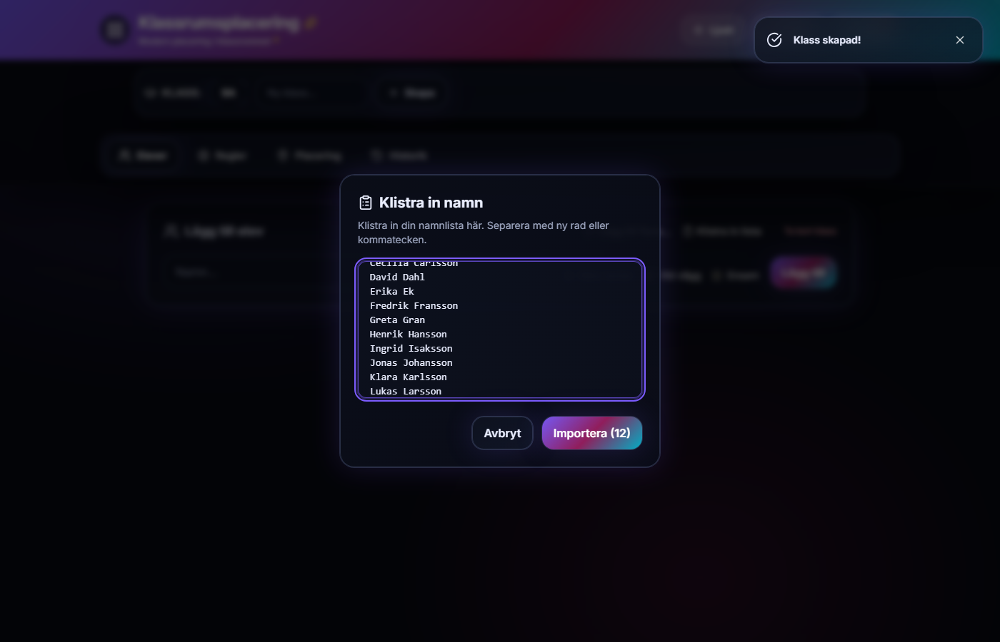
Klistra in elevlistan och klicka Importera.
Eleverna visas nu som kort i en lista, sorterade i bokstavsordning.
Alla tolv elever är tillagda i klassen 9A.
Alternativ: Du kan också lägga till elever en i taget (namn + kryssrutor + Lägg till) eller via Lägg till flera... som öppnar en tabell.
Steg 3 – Ange elevbehov
Vissa elever kan behöva sitta på en särskild plats. I exemplet sätter vi behov på tre elever:
Elev
Behov
Betydelse
Anna Andersson
Nära tavlan
Skall sitta i de främre raderna, nära tavlan
Bertil Berg
Vid vägg
Skall sitta på ytterplats, längst ut vid väggen
Cecilia Carlsson
Ensam
Skall sitta ensam – inte dela bänk med någon
Klicka på elevens kort i listan (t.ex. Anna Andersson).
Dialogrutan Redigera Elev öppnas.
Kryssa i rätt behov – t.ex. Måste sitta nära tavlan.
Klicka Spara ändringar.
Upprepa för övriga elever som har särskilda behov.
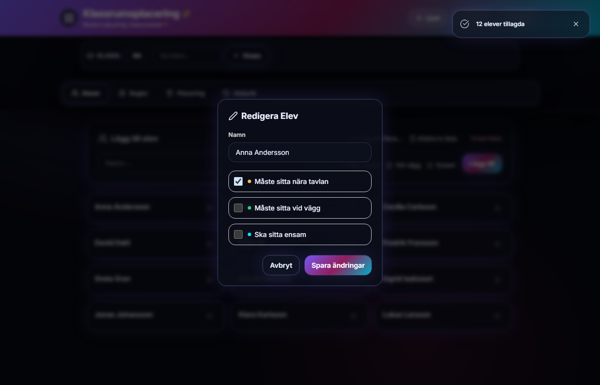
Klicka på en elev och kryssa i behov i dialogrutan.
Elevbehov visas som färgade märken på elevkorten: Tavla, Vägg, Ensam.
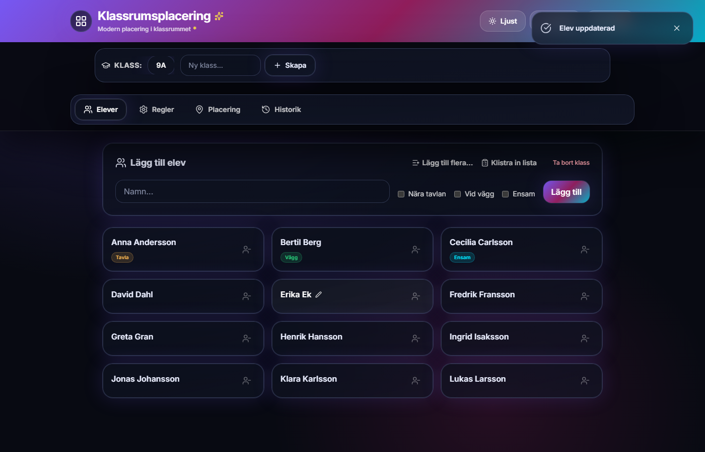
Anna (Tavla), Bertil (Vägg) och Cecilia (Ensam) är markerade.
Steg 4 – Skapa kompisregler
På fliken Regler anger du relationer mellan elever. I exemplet skapar vi två regler:
Regel
Elever
🚫 Får ej sitta bredvid
Anna Andersson och Bertil Berg
🔗 Ska sitta bredvid
Erika Ek och Fredrik Fransson
Klicka på fliken Regler.
Välj regeltyp: Får ej sitta bredvid eller Ska sitta bredvid.
Välj Elev 1 och Elev 2 i listrutorna.
Klicka Spara regel.
Upprepa för nästa regel.
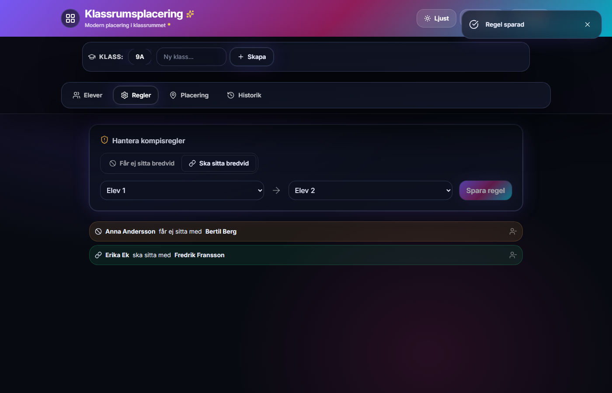
Båda reglerna visas i listan – röd/orange för "får ej", grön för "ska sitta med".
Obs! Om du sätter regeln "Ska sitta bredvid" på en elev som samtidigt har behovet Ensam varnar programmet dig. Det kan göra det svårt för algoritmen att hitta en bra lösning.
Steg 5 – Möblera klassrummet
Innan programmet kan placera elever måste du rita upp hur bänkarna står i klassrummet. Gå till fliken Placering.
Automatisk layout (enklast)
Klicka Ändra möblering om du inte redan är i möbleringsläge.
Under Automatiska layouter väljer du en layout. För vår klass med tolv elever passar Traditionella rader bra (dubbelbänkar i rader).
Bänkarna placeras ut på canvas. Tavlan (WHITEBOARD) visas längst upp – det är framsidan av klassrummet.
Klicka Klar med möblering när du är nöjd.
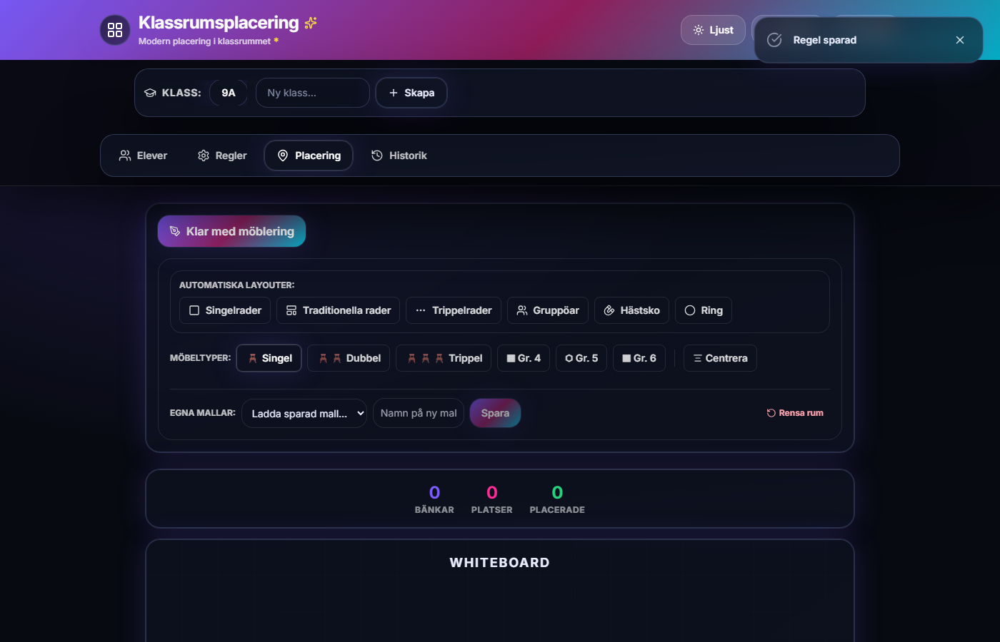
I möbleringsläge väljer du layout eller placerar bänkar manuellt.
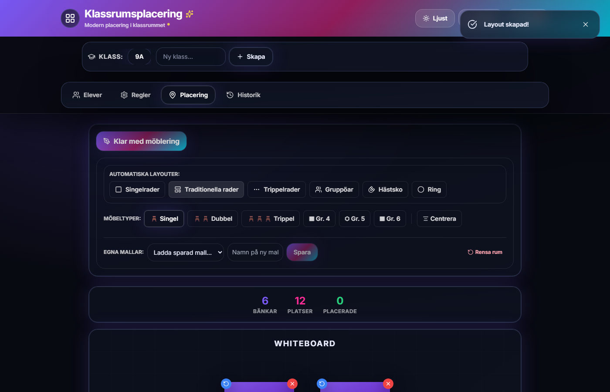
Traditionella rader – sex dubbelbänkar ger tolv platser för våra tolv elever.
Manuell möblering (valfritt)
Du kan också placera bänkar för hand:
Välj möbeltyp: Singel, Dubbel, Trippel, Gr. 4, Gr. 5 eller Gr. 6.
Klicka på canvas för att placera en bänk.
Dra bänken för att flytta den. Använd rotationsknappen (blå) eller ta bort med X (röd).
Centrera justerar alla bänkar snyggt i rader.
Under Egna mallar kan du spara rummet för att återanvända det i andra klasser.
Övriga automatiska layouter:
Layout
Beskrivning
Singelrader
En elev per bänk
Traditionella rader
Dubbelbänkar i rader
Trippelrader
Trebänksbord i rader
Gruppöar
Fyrpersonsgrupper
Hästsko
Bänkar i U-form
Ring
Bänkar i en cirkel
Steg 6 – Generera placering
Nu är allt klart – dags att låta programmet föreslå en placering!
Se till att du inte är i möbleringsläge.
Kontrollera växeln Historik: PÅ/AV:
PÅ – programmet försöker undvika att elever som suttit bredvid varandra tidigare hamnar bredvid varandra igen.
AV – historiken ignoreras (bra första gången).
Klicka Generera.
Efter ett ögonblick visas eleverna på bänkarna. En gul ruta Förslag på placering dyker upp.
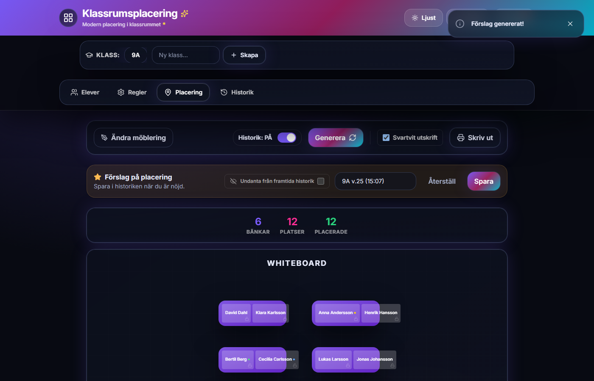
Placeringförslag för klass 9A – alla tolv elever är placerade.
Programmet placerar elever i denna ordning:
Elever på låsta platser (om du låst några tidigare)
Elever med behovet Ensam
Elever med behovet Nära tavlan
Elever med behovet Vid vägg
Övriga elever – med hänsyn till kompisregler och historik
Tips: Gillar du inte resultatet? Klicka Generera igen – varje körning ger ett nytt förslag. Du kan också låsa de platser du gillar och generera om resten.
Steg 7 – Justera, låsa och spara
Flytta en elev manuellt
Klicka på en elev på canvas – den markeras med grön ram.
Klicka på en annan plats (tom plats eller annan elev). Vid byte med annan elev byter de plats.
Klicka på samma elev igen för att avbryta valet.
Om flytten bryter mot en regel, ett behov eller historiken visas en varning – du kan välja att flytta ändå.
Låsa en plats
Klicka på hänglåsikonen på en plats. Låsta platser (lila ring) behålls vid ny generering – eleven flyttas inte.
Spara i historiken
När du är nöjd med placeringen, skriv ett namn i fältet i den gula rutan – t.ex. 9A – Vecka 12.
Valfritt: kryssa i Undanta från framtida historik om denna placering inte ska påverka framtida genereringar.
Klicka Spara.
Ge placeringen ett namn och klicka Spara för att lägga den i historiken.
Knappen Återställ tar tillbaka placeringen till hur den såg ut innan dina senaste manuella ändringar.
Osparade ändringar: Om du försöker byta flik eller klass utan att ha sparat visas en varning. Du kan då välja att spara, kasta ändringarna eller avbryta.
Steg 8 – Historik och utskrift
Öppna en tidigare placering
Gå till fliken Historik.
Klicka Öppna på den placering du vill titta på.
Du flyttas till fliken Placering och den sparade layouten laddas.
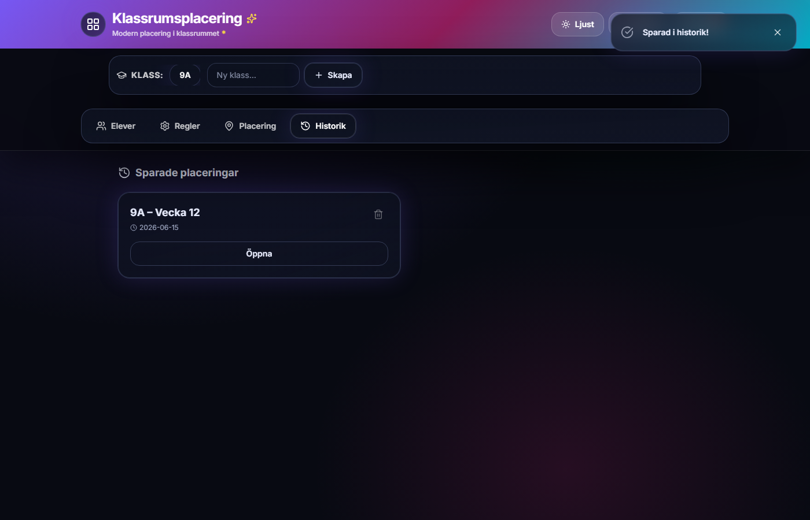
Sparade placeringar visas med namn och datum.
Skriv ut placeringen
Gå till fliken Placering med en färdig placering på skärmen.
Välj om du vill ha Svartvit utskrift (kryssrutan).
Klicka Skriv ut.
I webbläsarens utskriftsdialog: välj skrivare eller "Spara som PDF". Använd liggande orientering för bäst resultat.
Vid utskrift döljs menyer och knappar – bara klassrummet med elevnamn skrivs ut.
Spara hela projektet till fil
Utöver automatisk lagring i webbläsaren kan du spara allt (alla klasser, elever, regler och historik) som en fil på datorn:
Klicka Spara i headern (uppe till höger).
Välj var filen ska sparas. En röd prick på knappen visar att det finns osparade ändringar.
För att öppna en sparad fil senare: klicka Öppna i headern.
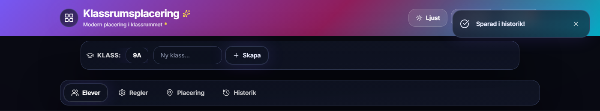
Öppna och Spara finns alltid tillgängliga i headern.
Snabbreferens
Färgkoder på canvas
Markering
Betydelse
Gul prick
Behov: nära tavlan
Grön prick
Behov: vid vägg
Blå prick
Behov: ensam
Lila ring
Låst plats
Grön ram
Vald elev (vid manuell flytt)
Orange markering
Tidigare bänkgrannar (historikkonflikt)
Flera klasser
Du kan ha flera klasser i samma projekt – t.ex. 9A och 9B. Klicka på klassnamnet i klassväljaren för att byta. Varje klass har egna elever, regler och historik.
Rummallar
Om du har flera klassrum med olika bänkuppsättningar kan du spara en rummall under Egna mallar i möbleringsläge. Mallen sparar bänkarnas placering men inte eleverna.
Tips och felsökning
"Möblera klassrummet först!"
Det finns inga bänkar på canvas. Gå in i möbleringsläge och lägg till bänkar, eller välj en automatisk layout.
"Inga elever i klassen."
Lägg till elever på fliken Elever innan du genererar.
Algoritmen hittar ingen bra lösning
Kontrollera om du har motstridiga regler – t.ex. en elev som ska sitta ensam men också ska sitta bredvid någon.
Räkna att det finns tillräckligt med platser – antal bänkplatser måste vara minst lika många som elever.
För många "får ej sitta bredvid"-regler kan göra det svårt att placera alla.
Prova att klicka Generera flera gånger, eller lås de platser du redan gillar och generera om.
Orange markering – historikkonflikt
Elever som suttit bredvid varandra i en tidigare sparad placering hamnar bredvid varandra igen. Det är en påminnelse, inte ett fel – du kan spara placeringen ändå om du vill.
Data försvann
Har du rensat webbläsarens data? Då försvinner sparningen i webbläsaren.
Arbetar du i inkognitoläge? Data sparas inte mellan sessioner.
Öppna en backup-fil via Öppna om du har sparat en tidigare.
Bra vanor
Spara projektet till fil med jämna mellanrum som backup.
Spara placeringar i historiken innan du genererar om – då kan du gå tillbaka.
Använd tydliga namn i historiken, t.ex. veckonummer eller datum.
Spara rummallar om du undervisar i flera olika lokaler.
Automatisk rensning: Placeringar i historiken som är äldre än tolv månader raderas automatiskt. Projektfiler äldre än tolv månader kan inte öppnas – spara nya kopior om du behöver långtidsarkiv.